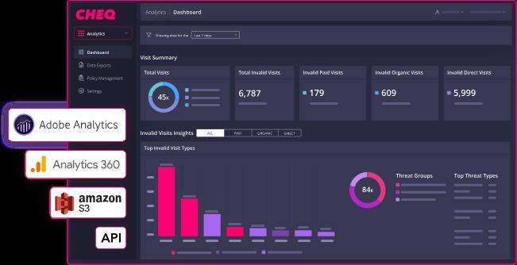
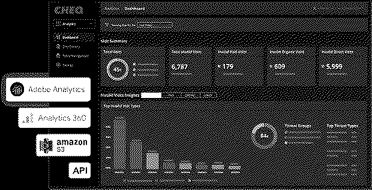

Selected work
Threat Intelligence Investigation
Automated bot traffic and ad fraud analysis across 126,959 e-commerce sessions for CHEQ, identifying attack patterns, quantifying financial impact, and developing a prioritized mitigation strategy to protect revenue-generating workflows and advertising spend.
The Problem
E-commerce platforms are a high-value target for automated abuse, and most of it is invisible at first glance. Bots mimicking legitimate user behavior inflate traffic metrics, drain advertising budgets, hoard inventory, and stuff credential databases, all while flying under the radar of conventional monitoring. CHEQ needed a rigorous behavioral analysis of their session data to answer a question that's harder than it sounds: which of these 126,959 sessions are actually human?
What’s Included
- Behavioral signal analysis across 126,959 e-commerce sessions to identify automated bot traffic
- Multi-signal correlation including datacenter ASNs, headless browser indicators, timezone mismatches, and interaction speed analysis
- Bot-driven attack pattern detection targeting checkout, login, and product endpoints
- Ad fraud quantification across paid Google and Bing search traffic consumed by automated sessions
- Prioritized mitigation strategy covering ASN blocking, device fingerprint detection, rate limiting, and MFA enforcement
Impact
Identified that 25.51% - or roughly 1 in 4 visitors - of all sessions were automated bot traffic. That finding alone reframes how CHEQ interprets their analytics, allocates ad spend, and designs abuse protections. The investigation estimated $3,362 – $13,448 in wasted advertising spend attributable to bots interacting with paid search campaigns, and surfaced active attack patterns consistent with two of the most revenue-critical endpoints on any e-commerce platform: inventory hoarding and credential stuffing at the checkout and login layers.


$ cat stack.txt